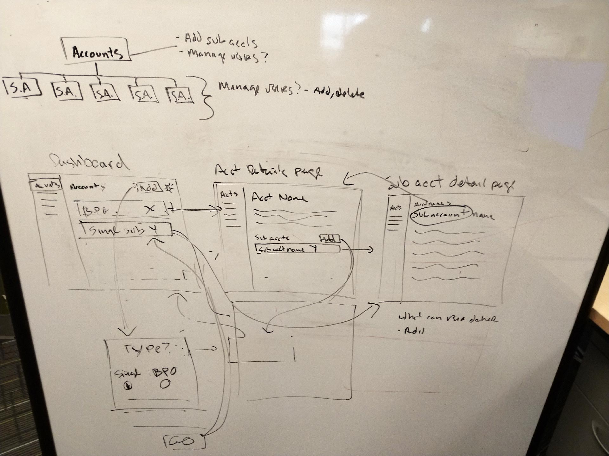
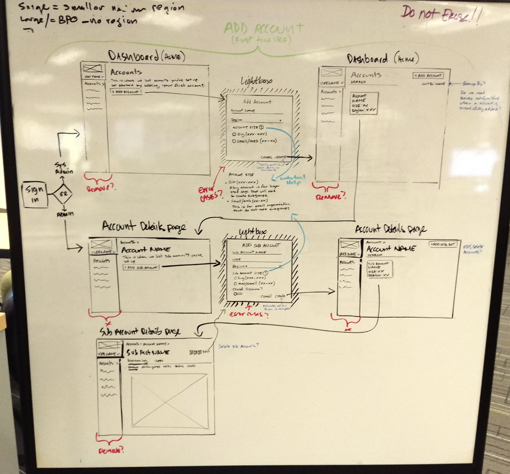
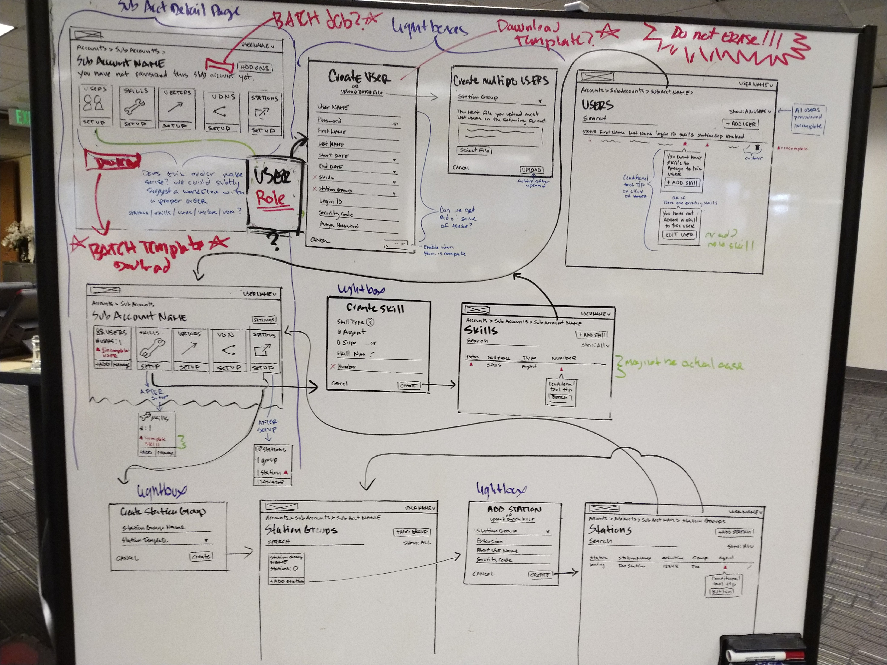
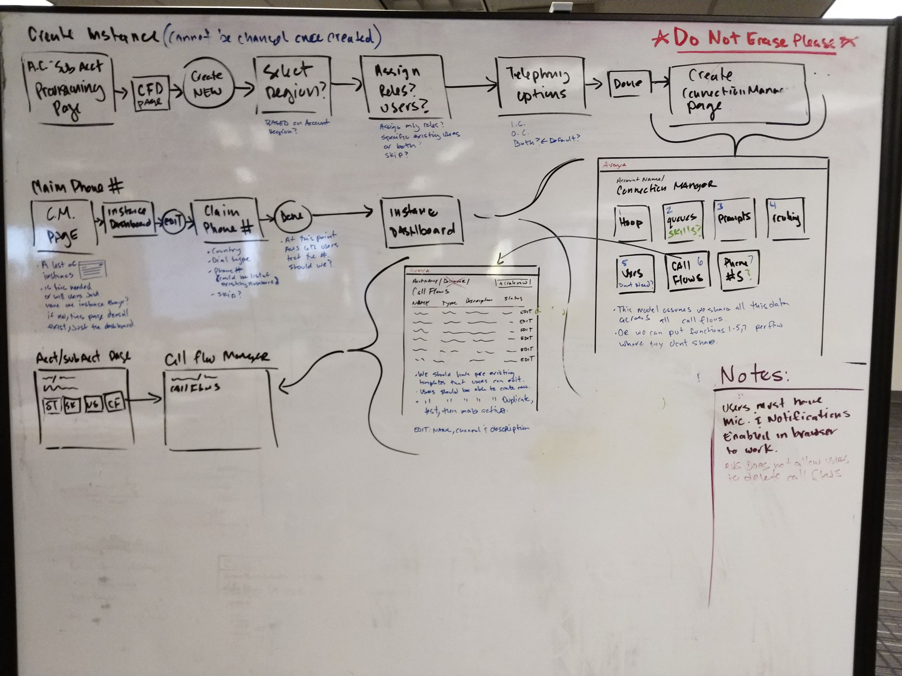
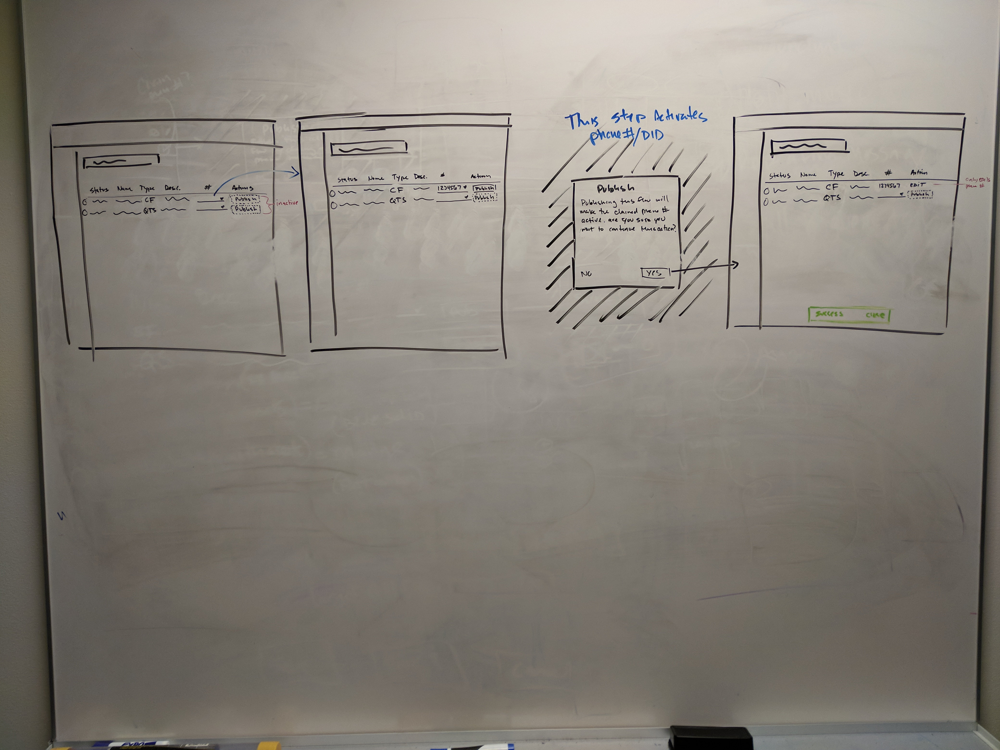
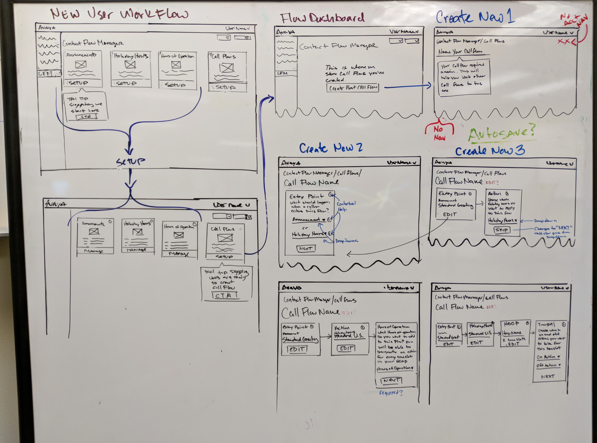

Admin Center
Admin Center is a call center management tool used by large multinational corporations and internally for support services. Users can manage call center agents, create call flows and provision skills to workstations.
The current incarnation of Admin Center is very complex and requires a bit of training from internal support teams to get customers using it on their own. But Avaya wanted to target a new customer. This customer would be a small to mid market business or call center that should need very little to no internal support to get set up.
After a couple weeks of competitor research and demos of existing call center tools, I was ready to start designing a more user friendly cloud based experience.
Accounts and Sub-Accounts
Here is an example of me going over account creation. Sketching from a first run experience helps me come up with questions regarding account requirements and also surfaces possible dependencies on other features or UI elements.

A stronger understanding leads to higher fidelity.
As we iterate over the account creation UX other issues with account navigation start to surface and we begin to touch on that a little.

Account Navigation

Account navigation was one of the first things I noticed that needed improvement and a feature our Project Manager already have alot of negative feedback on.
In the sketch above you can see that we are considering solving account navigation issues with a card system. Here's a couple of problems we believe a card system could solve.
-
Reduce cases where users make changes to accounts they didn't intend to by requireing users to choose an account before we present them with account provisioning features.
-
Account satus abiguity. Users would now be able to see the status of their individual accounts at a high level.
User Feedback
We tested a low fidelity prototype on former call center agents and sales support staff. Overall the feedback was positive in that every user seemed to understand the navigation patterns.
View Prototype
UX Audit
After working through some of these enhancementd with the team it became obvious that improving the AC UX was going to take a lot of work. Not just on the UI side but in the back end as well. The team was also going through an aquisition and we still had features to deliver by the end of the year. So a lot of these major improvements were going to have to be put off till 2019. :(
With the limited resources we had I decided to do a UX audit of the site. I figured if I can recommend some relatively easy front-end only improvements (form styleing, notifications, validation, layout etc.) I might be able to squeeze in some enhancement tasks into the 2018 commitments we had.
Download UX Audit
ACCOUNT PROVISIONING
After a user creates an account, they need to provision certain objects to their call center like agents, agent skills and the workplaces they operate called stations or station groups.
Provisioning Workflow
Once users click on the provisioning tab its difficult to know where to start and there was no logical order in the way assets are presented in the UI. What are these things and why do users need to interact with them?

After going over the existing provisioning UX I went back to the whiteboard with the goals of improving the workflow. I start as a new user sketching out what I think the UX should be based on competitor research and demos of exsting Avaya products. Sketching also helps me come up with questions for engineers and PMs around techincal and business requirements that I may need a better understanding of.

After reviewing my sketches with engineers and our PM I have some questions answered and new problems to solve.

Call Flow Designer
The call flow designer is a web application used to construct complex call flows. If you've ever been asked to press 1 for English over the phone, you've experienced some sort of call flow that was designed by someone using a tool like this.
Although Avaya currently has a soulution for this type of product its fairly complex and requires a skilled call center administrator to use it. We were tasked with creating a new version of this product that should be intuitive enough for a untrained users to set up and get working quickly.
Call Flow Dashboard
A call flow is constructed using various components some of wich are required to build even a simple queue. We thought those assets should live together where users could manage them along die their actual call flows.
Here is a sketch where I map out how the user accesses the CFD in Admin Center. I also sketched how a user would claim the most essential asset of a call flow, the phone number. At this point there is still alot of ambiguitiy but I though this was enough to show to our PM to get the conversation going and help us define what the requirements are for the MVP.

Same sketch with notes from a review.

Splitting Up the Work
As we continue to move forward it was clear that the call flow dashboard and the call flow designer would need to be split up. Our visual designer Matt took it as an opportunity to expand his design skills into UX. From here, Matt moved foward with the dashboard UX and I was able to move onto the actual designer component of the tool. Here is a quick sketch I went over with Matt to communicate my vision how the publish feature might work.

High Fidelity
Here are the results of mine and Matts work. There is alot of functionality that goes into managing call flows and having Matts help with this was a huge win for us and kept us in front of engineering.
Download Mockups
Call Flow Designer
Most CFD tools are kind of like Photoshop in that once you launch the tool, you're left with a blank page and a bunch of awesome tools off to the side that you may not know how to use. We needed to be a bit more helpful to our users so we used a card sytem that included contextual help and explicit calls to action.

Download PDF Mock-ups
Holiday Hours
Holiday hours are an asset used in call flows to designate what happens during a certain day. Users need to create them so they can be added to their call flows. For example, if you call your bank on Christmas day chances are they will have a special message for that holiday and/or maybe a special group of agents working on that day to direct your call to.
Holiday Hours are a pretty easy concept to understand so I felt we didn't need to start from sketches. There are also tons of date picking elements offered by serveral frameworks that could serve our needs. Since we knew that our users preferred to use keyboards I ended up going with the Google Material their UI is very keyboard friendly and also supports touch and mobile UX in case we added the requirement in the future.
Download Mockups